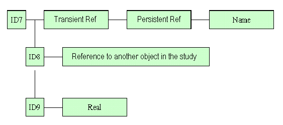

|
|
|
|
In SALOME application the Study module is used for management (creation, saving
etc.) of studies. In the framework of the platform, a study represents a working
document allowing to manage the data produced by various components which are
integarted into SALOME.
The study represents a set of objects that we will call Study Objects or SObjects. The study can be represented as a tree, every node of that tree containing a SObject. SObjects in the study can be values or references towards data of calculation, graphs of calculation, trees of construction of detail(room), results. Every SOject of the study is characterised by a unique identifier in the study.
The study allows to describe the following relations:
Every SObject in the study contains a set of attributes. These attributes represent a set of definitions associated to that object, they can contain values or corba references towards the data contained in the internal data structure of a component.
As the structure of the study is tree-like it is possible to associate sub-objects to objects.
As particular object, the study contains Component Data which are labels associated to the component which produce data in the study. It is to this object that we can associate attributes containing ID which we shall allow to identify the type of the component and also its instance. Objects produced by a component will be sub-objects of the coresponding Data Component.
For example Component Data GEOM will contain the data produced by the component Geom.
 |
GEOM contains the data produced by the component GEOM. The component MESH contains a SObject Mesh_1 wich refers to the SObject identified by ID4 corresponding to Geometrie_1. |
We distinguish two forms of the study, the study opened in a session SALOME and the study in the persistent format. These two formats are described in the following sections
The representation of the study in memory will be based on the document OCAF (supplied by OCC). The document OCAF can be seen as a tree, every node of that tree is identified by a tag representing an integer value.
The exploration of the tree from the root to a node supplies a sequence of tags which establishes a unique identifier ID. ID represents a character string containing the sequence of tags separated by one ':'.
For example 0:1:12:4
To every node we can associate a set of attributes.
The attributes which the study can contain can be of the following types:
Remark: it is the study which takes care to build the attributes from the values which are passed to it, so an attribute is always in a study, and it knows the study object to which it is attached.
Example of a Study Object as a set of various attributes.
To store a study HDF format is used, this tool allows to represent persistent data in the form of a tree.
Under the root of the persistent document, you can find a set of nodes:
It will be possible to complete the definition of one object in the study by associating to it an attribute HDFPath which will contain the path to the persistent data.

The Study in SALOME application possess a wide functionality. This functionality is provided by a set of classes which are described below.
The purpose of the Study class is to manage the data produced by various components of SALOME platform. Most of the Study operations are handled by the StudyManager and the StudyBuilder. What is left in the Study class are elementary inquiries. A Study is explored by a set of tools, mainly iterators , which are described further.
Nevertheless, the Study class contains a set of methods providing:
The API reference for this class can be found here.
StudyBuilder supplies basic services to edit the study. The edition of the study is made by the component. Every component will use the basic services of the StudyBuilder allowing to write and publish objects.
StudyBulder provides the following functionality:
The API reference for this class can be found here.
The purpose of the Manager is to manipulate Studies. Since SALOME is a multi-document application during a working session you can operate as many stadies as you wishes to create.
For that purpose StudyManager provides the following functionality:
The API reference for this class can be found here.
The objects in the study are built by the StudyBuilder. The SObject class provides methods for elementary inquiries, like getting an object ID or its attribuites.
The API reference for this class can be found here.
The SComponent class establishes in the study a permanent assocition to the components integrated into SALOME platform. The SComponent interface is a specialization of the SObject class. It inherits the most of its methods from the SObject class which are used for management of the SComponents.
The API reference for this class can be found here.
It is one of the tools destined for exploration of the study. This class contains a set of methods allowing to get the access to all identified objects which are sons of another identifiedobject.
The API reference for this class can be found here.
This is the second tool destined for exploration of the study. This interface contains the methods allowing to iterate over all SComponents in the list. The search is started from the first SComponent in the list.
The API reference for this class can be found here.
GenericAttribute represents a base class for all attributes which can be assigned to the SObjects created in the study. All attribute classes derive from this classe and inherit its methods.
The API reference for this class can be found here.
In SALOME application a SObject can possess the following attributes:
UseCase in the study represents a user-defined subtree, containing all or some of the objects which currently exist in the study. The UseCaseBuilder class contains a set of methods used for management (creation, deletion etc) of this sub-tree in the study.
The API reference for this class can be found here.
This class represents an exploration tool for the UseCase. It contains a set of methods used for iteration over the objects in the UseCase.
The API reference for this class can be found here.
The StudyBuilder can be created with the method NewBuilder. While invocation of this method a new object of the class Callback is created and this object is assigned to the newly created Builder as callback which should be called when adding and removing the objects.
The API reference for this class can be found here.
This class represents a common tool for all components integrated into SALOME application, that allows them to communicate with the study. It contains a set of methods which can be called by any component and which provide the following functionality:
The API reference for this class can be found here.